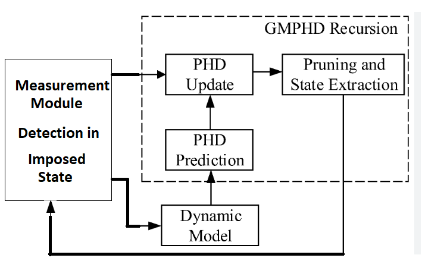
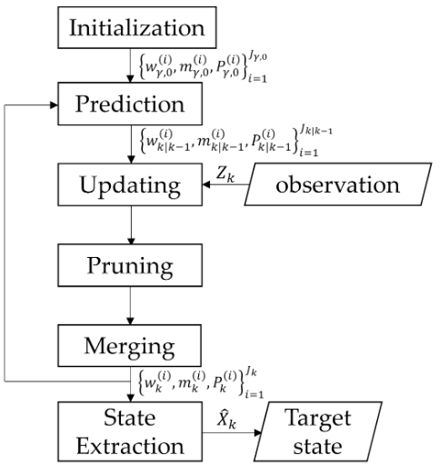

Gaussian Mixture Probability Hypothesis Density at the Glance#
Inrtroduction of GM-PHD#
A Gaussian Mixture Probability Hypothesis Density (GM-PHD) filter is often used in multi-target tracking, where it estimates the number and states of multiple targets based on noisy observations. The Probability Hypothesis Density (PHD) filter has been introduced as:
a powerful the Kalman Filter in multi-object tracking
with random number of target.
first-order statistical moment, or PHD, of a multi-target posterior distribution
comprising true measurements and false alarms
In a GM-PHD filter multiple target posterior distribution will be a Gaussian mixture (GM). Including the following block diagram.

As mentioned above, it is similar to a Kalman filter, consisting of two parts: prediction and updating. However, due to multitarget tracking in noisy clutter, the probability expectation is used, and therefore state extraction with pruning must be added. The dynamic model used is based on the Kalman filter and other state-space models.
Abstracted form of above figure as shown here. Input are random finit set (RFS) of measurements \( Z_k \) and output are RFS of states \( \hat{X}_k\).

Transition Density: Given a state : \( p(\mathbf{x}_{k-1}) \) at time :\(k-1\), the probability density of a transition to the state :\(p(\mathbf{x}_k)\) at time :\(k\) is given by : \(f_{k\vert k-1}(\mathbf{x}_{k}\vert \mathbf{x}_{k-1})\)
Likelihood Function: Given a state :\(\mathbf{x}_{k}\) at time :\(k\), the probability density of receiving the detection :\(\mathbf{z}_{k}\) is given by :\(g_{k}(\mathbf{z}_{k}\vert \mathbf{x}_{k})\)
The Posterior Density: The probability density of state :\(\mathbf{x}_{k}\) given all the previous observations is denoted by :\(p_{k}(\mathbf{x}_{k}\vert \mathbf{z}_{1:k})\). Using an initial density :\(p_{0}(\cdot)\), we can apply Bayes’ recursion to show that the posterior density is actually
It is important to notice here that the state at time :\(k\) can be derived wholly by the state at time :\(k-1\).
Here we also introduce the following notation: :\(p_{S,k}(\zeta)\) is the probability that a target :\(S\) will exist at time :\(k\) given that its previous state was :\(\zeta\)
Suppose we have the random finite set :\(\mathbf{X}_{k} \in \chi\) corresponding to the set of target states at time :\(k\) and :\(\mathbf{X}_k\) has probability distribution :\(P\). Integrating over every region :\(S \in \chi\), we get a formula for the first order moment (also called the intensity) at time :\(k\), :\(v_{k}\)
The set of targets spawned at time :\(k\) by a target whose previous state was :\(\zeta\) is the random finite set :\(\mathbf{B}_{k|k-1}\). This new set of targets has intensity denoted :\(\beta_{k|k-1}\).
The intensity of the random finite set of births at time :\(k\) is given by :\(\gamma_{k}\).
The intensity of the random finite set of clutter at time :\(k\) is given by :\(\kappa_{k}\).
The probability that a state :\(x\) will be detected at time :\(k\) is given by :\(p_{D, k}(x)\).
Assumptions ^^^^^^^^^^^ The GM-PHD filter assumes that each target is independent of one another in both generated observations and in evolution. Clutter is also assumed to be independent of the target measurements. Finally, we assume that the target locations at a given time step are dependent on the multi-target prior density, and their distributions are Poisson. Typically, the target locations are also dependent on previous measurements, but that has been omitted in current GM-PHD algorithms.
Posterior Propagation Formula ^^^^^^^^^^^^^^^^^^^^^^^^^^^^^ Under the above assumptions, Vo and Ma [ ]_ proved that the posterior intensity can be propagated in time using the PHD recursion as follows:
For more information about the specific formulas for linear and non-linear Gaussian models, please see Vo and Ma’s full paper.
A Ground-Based Multi-Target Simulation#
This simulation will include several targets moving in different directions accross the 2D Cartesian plane. The start locations of each object are random. These start locations are called priors and are known to the filter, via the density :\(p_{0}(\cdot)\) discussed above.
At each time step, new targets are created and some targets die according to defined probabilities.
import numpy as np
from scipy.stats import multivariate_normal
import matplotlib.pyplot as plt
# Helper functions
def create_synthetic_data(num_targets, num_steps, noise_cov):
"""Generate synthetic time series data for multiple targets."""
targets = []
for _ in range(num_targets):
x0 = np.random.randn(2)
target = [x0]
for _ in range(1, num_steps):
x_prev = target[-1]
x_new = x_prev + np.random.randn(2) * np.sqrt(noise_cov[0, 0])
target.append(x_new)
targets.append(np.array(target))
return np.array(targets)
def gaussian_mixture_posterior(means, covariances, weights):
"""Approximate posterior as a mixture of Gaussians."""
def posterior(x):
return sum(w * multivariate_normal(mean=m, cov=c).pdf(x)
for m, c, w in zip(means, covariances, weights))
return posterior
def update_phd(means, covariances, weights, measurements, R, birth_weight=0.01):
"""Update step of GM-PHD filter."""
new_means = []
new_covariances = []
new_weights = []
# Update existing components
for i in range(len(weights)):
mean = means[i]
cov = covariances[i] + R
for z in measurements:
K = cov @ np.linalg.inv(cov + R)
mean_new = mean + K @ (z - mean)
cov_new = (np.eye(len(mean)) - K) @ cov
weight_new = weights[i] * multivariate_normal(mean=mean, cov=cov).pdf(z)
new_means.append(mean_new)
new_covariances.append(cov_new)
new_weights.append(weight_new)
# Add birth components (new targets)
for z in measurements:
new_means.append(z)
new_covariances.append(R)
new_weights.append(birth_weight)
# Normalize weights
new_weights = np.array(new_weights)
new_weights /= np.sum(new_weights)
return np.array(new_means), np.array(new_covariances), new_weights
def prune(means, covariances, weights, weight_threshold=1e-3, max_components=100):
"""Prune and merge components in the GM-PHD filter."""
indices = np.where(weights > weight_threshold)[0]
means = means[indices]
covariances = covariances[indices]
weights = weights[indices]
if len(weights) > max_components:
indices = np.argsort(weights)[-max_components:]
means = means[indices]
covariances = covariances[indices]
weights = weights[indices]
return means, covariances, weights
# Parameters
num_targets = 3
num_steps = 20
noise_cov = np.array([[0.1, 0], [0, 0.1]])
R = np.array([[0.1, 0], [0, 0.1]])
# Generate synthetic data
synthetic_data = create_synthetic_data(num_targets, num_steps, noise_cov)
# Initialize GM-PHD components
means = [np.random.randn(2)]
covariances = [np.eye(2)]
weights = [1.0]
# Run GM-PHD filter over time series
for t in range(num_steps):
# Simulate measurements (with noise)
measurements = synthetic_data[:, t] + np.random.randn(num_targets, 2) * np.sqrt(noise_cov[0, 0])
# Predict (for simplicity, assume constant velocity model)
means = [m for m in means]
covariances = [c + noise_cov for c in covariances]
# Update
means, covariances, weights = update_phd(means, covariances, weights, measurements, R)
# Prune and merge components
means, covariances, weights = prune(means, covariances, weights)
# Visualize current state
plt.scatter(measurements[:, 0], measurements[:, 1], c='red', label='Measurements')
plt.scatter([m[0] for m in means], [m[1] for m in means], c='blue', marker='x', label='Estimates')
plt.legend()
plt.title(f'Time Step {t+1}')
plt.show()